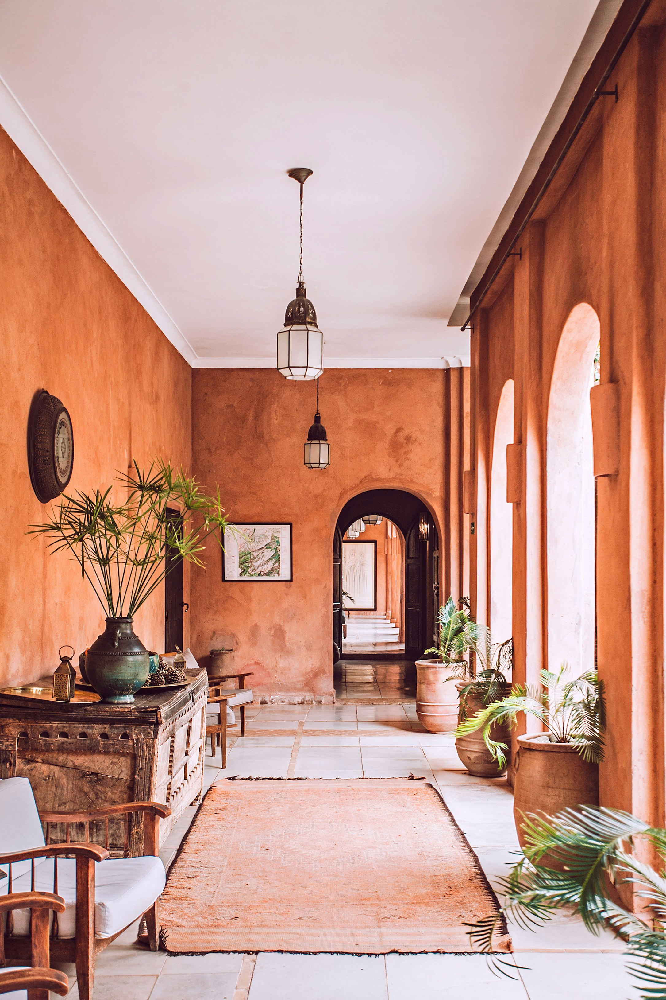

Study, Visit & Immigrate: The Ultimate Guide to the UK for Bangladeshis
Study, Visit & Immigrate: বাংলাদেশীদের জন্য যুক্তরাজ্যের সম্পূর্ণ গাইড
The iconic
Big Ben and Westminster Bridge
🌟
Introduction
Rich in history, steeped in tradition, and renowned globally for its
academic excellence, the United Kingdom remains one of the most sought-after destinations in
the world. From the bustling, multicultural streets of London to the historic, cobbled lanes
of Edinburgh, the UK offers an experience unlike any other.
For
Bangladeshi citizens, the UK has long been a second home. The deep-rooted historical ties
and the thriving British-Bangladeshi community provide a warm, familiar environment for
newcomers. Whether your goal is to study at a world-class university, explore breathtaking
landscapes, or build a long-term career, the UK opens doors to endless global opportunities.
The Union
Jack, a symbol of heritage and unity
🗺️
Country
Overview
The United Kingdom is a sovereign state comprising four
distinct countries: England, Scotland, Wales, and Northern Ireland. Despite its relatively
small geographical size, it wields enormous global influence in culture, finance, education,
and politics.
English is the primary language, but the UK's
multicultural society means you'll hear languages from all over the globe, including
Bengali, especially in areas like Tower Hamlets in East London. The official currency, the
Pound Sterling (£), is one of the strongest in the world.
The weather
in the UK is famously changeable. You can experience all four seasons in a single day!
However, it generally features mild summers and cool, wet winters. Adapting to the British
'cup of tea' culture and the polite, orderly 'queue' system is part of the charm of living
here.
Historic
architecture preserved through centuries
🏛️
History
The UK boasts a history that spans millennia, starting from ancient stone
circles like Stonehenge, through the Roman occupation, the Norman conquest, and the mighty
British Empire. Every city and town is layered with history, visible in its castles,
cathedrals, and museums.
For a Bangladeshi visitor or student,
understanding this history provides context to the deep connections between the two nations.
The modern UK is a testament to its evolution—a nation that respects its ancient traditions
while leading the world in technology and modern arts.
The City of
London, a major global financial hub
💷
Economy &
Economic Growth
The UK possesses one of the strongest, highly
developed, and globally integrated economies. London, in particular, is a powerhouse of
international finance, matching New York in its global influence.
Beyond finance, the UK leads in sectors like aeronautics, pharmaceuticals, technology, and
the creative industries. For international students and skilled workers, this translates to
a robust job market with incredible scope for career progression and securing high-paying
roles.
The Palace
of Westminster, the heart of UK politics
⚖️
Politics
The UK operates as a parliamentary democracy under a constitutional monarchy.
King Charles III serves as the head of state, while the Prime Minister leads the government.
The democratic institutions here are some of the oldest in the world.
The political climate values freedom of speech, human rights, and the rule of law. It is a
stable, secure country that offers a reliable legal framework, giving immigrants and
temporary residents peace of mind regarding their safety and rights.
A
welcoming, multicultural society
👨👩👧👦
Demographics
The UK is home to over 67 million people. While
historically homogeneous, modern Britain is a vibrant tapestry of cultures, ethnicities, and
religions. Cities like London, Birmingham, and Manchester are incredibly diverse.
The Bangladeshi diaspora is a significant, thriving part of this demographic
mosaic. With established communities, grocery stores selling familiar spices, and numerous
mosques and cultural centres, new arrivals from Bangladesh will find it remarkably easy to
feel at home.
Historic
universities renowned for academic rigor
🎓
Education
System
The UK education system is legendary. Universities like
Oxford, Cambridge, Imperial College, and UCL consistently rank among the top 10 globally.
The emphasis here is on independent thinking, research quality, and practical application.
Unlike typical 4-year undergraduate degrees elsewhere, most UK Bachelor's
degrees take just 3 years, and Master's degrees take only 1 year. This intensive structure
saves both time and tuition fees, making it a highly cost-effective destination for
world-class education.

Lush
landscapes and castles of the Scottish Highlands
🗺️
Tourism
Tourism in the UK is spectacular. You can explore the Roman Baths in Bath,
the mysterious Stonehenge, the breathtaking Scottish Highlands, or the stunning coastline of
Cornwall.
London itself offers an endless array of attractions: the
British Museum, the London Eye, Tower of London, and Buckingham Palace. Exploring the UK is
incredibly accessible thanks to a comprehensive and scenic railway network.
Classic red
buses and iconic British culture
✈️
Why Visit the
UK?
Visiting the UK is like walking through a living museum
intertwined with a modern, dynamic society. It is perfect for those who want to witness
historical landmarks, attend world-class football matches in the Premier League, or
experience the elite shopping on Oxford Street.
For Bangladeshis, a
visit to the UK is often driven by the desire to reunite with family and friends who have
settled there, while simultaneously enjoying a premium holiday experience in a culturally
rich environment.
Degrees
that are respected by employers worldwide
📘
Why Study in
the UK?
A UK degree is a mark of prestige recognized by employers
worldwide. The teaching methodology encourages students to ask questions, debate, and
develop analytical skills rather than simply memorizing facts.
Crucially, the UK offers the Graduate Route visa, allowing international students to stay
and work for 2 years (or 3 years for PhD graduates) after completing their studies. This is
a massive opportunity to gain international work experience and potentially secure
sponsorship.
High
quality of life and excellent healthcare for families
🏡
Why Immigrate
to the UK?
The UK provides an exceptionally high standard of living.
Residents benefit from the National Health Service (NHS), offering free healthcare at the
point of use, and a robust public education system for children.
With
an established South Asian community, moving from Bangladesh to the UK feels less daunting.
There is a high demand for skilled professionals in healthcare, engineering, IT, and
finance, making it a lucrative destination for long-term settlement.
Standard
Visitor Visa application process
📋
How to Visit
the UK from Bangladesh
To visit the UK for tourism or to see family,
Bangladeshi citizens must apply for a Standard Visitor Visa. This visa typically allows you
to stay in the UK for up to 6 months.
You must prove that you intend
to leave the UK at the end of your visit, and that you have sufficient funds to support
yourself during your stay. Providing strong financial ties to Bangladesh, such as property
ownership, employment letters, and bank statements, is crucial for a successful application.
Securing a
CAS and your Tier 4 Student Visa
📚
How to Apply
to Study
First, you must apply to and receive an unconditional offer
from a UK university. Undergraduate applications are generally processed through UCAS, while
postgraduate applications go directly to the university.
Once
accepted, the university will issue a Confirmation of Acceptance for Studies (CAS). With
your CAS, IELTS score, and proof of required funds (to cover tuition and living costs for up
to 9 months), you can apply for the UK Student Visa (formerly Tier 4). Edu Abroad Limited
guides you through every single step to ensure compliance.
Skilled
Worker routes to Permanent Settlement (ILR)
🏠
How to
Immigrate
The most common immigration route for professionals is the
Skilled Worker visa. To qualify, you must have a job offer from a UK employer holding a
valid sponsor licence, and the job must meet specific skill and salary thresholds.
Alternatively, the Graduate Route allows students to transition into the
workforce. After living and working in the UK on eligible visas for 5 years, you can apply
for Indefinite Leave to Remain (ILR), the UK's equivalent of permanent residency, paving the
way to British Citizenship.
Expert
consultation tailored to your UK ambitions
💬
How Edu Abroad
Limited Can Help You
Navigating UK
university admissions and strict visa criteria can be incredibly stressful. That is where
Edu Abroad Limited steps in. We act as your dedicated partners, simplifying the complexity
into a smooth, step-by-step process.
Our
experts review your academic profile, match you with the best-fit UK universities,
meticulously edit your Statement of Purpose (SOP), process your CAS, and handle the complete
visa application. We maintain a 98% visa success rate because we leave absolutely nothing to
chance.
Common
questions regarding UK applications
❓
Frequently
Asked Questions (FAQ)
Q: Is IELTS
mandatory for the UK? A: Generally, yes. It is required to prove English
proficiency for the Student Visa. However, some universities may waive it if you have
excellent English grades in your HSC / O/A Levels, or through alternative tests like PTE or
Duolingo.
Q: Can I work while studying in the UK? A: Yes, international students
on a degree-level course can work up to 20 hours per week during term time and full-time
during holidays.
Q: How
long
does the Student Visa process take? A: Standard processing takes about 3
weeks from the date of your biometric appointment. Priority services (5 working days) are
often available for an additional fee.
The iconic
Big Ben and Westminster Bridge
🌟
পরিচিতি
সমৃদ্ধ ইতিহাস, ঐতিহ্য এবং বিশ্বমানের শিক্ষা ব্যবস্থার জন্য যুক্তরাজ্যের (ইউকে)
জুড়ি মেলা ভার। লন্ডনের বহুজাতিক ব্যস্ত রাস্তা থেকে শুরু করে এডিনবার্গের প্রাচীন পাথুরে গলি—
যুক্তরাজ্য এমন এক অনন্য অভিজ্ঞতা প্রদান করে যা অন্য কোথাও পাওয়া কঠিন।
বাংলাদেশীদের জন্য যুক্তরাজ্য দীর্ঘকাল ধরেই একটি দ্বিতীয় বাড়ির মতো। ঐতিহাসিক যোগসূত্র এবং
সেখানে থাকা বিশাল বাঙালি কমিউনিটি, নতুনদের জন্য একটি উষ্ণ ও পরিচিত পরিবেশ তৈরি করে। আপনার
লক্ষ্য যদি হয় বিশ্বমানের বিশ্ববিদ্যালয়ে পড়া, চমৎকার সব ঐতিহাসিক স্থান ঘুরে দেখা, কিংবা একটি
উন্নত ক্যারিয়ার গড়া— তবে ইউকে আপনার জন্য বিশ্বমঞ্চে অগণিত সুযোগের দরজা খুলে দেবে।
The Union
Jack, a symbol of heritage and unity
🗺️
দেশ সম্পর্কে
ধারণা
যুক্তরাজ্য মূলত চারটি দেশের সমন্বয়ে গঠিত: ইংল্যান্ড,
স্কটল্যান্ড, ওয়েলস এবং উত্তর আয়ারল্যান্ড। ভৌগোলিক আয়তনে তুলনামূলক ছোট হলেও সংস্কৃতি,
অর্থনীতি, শিক্ষা ও বিশ্ব রাজনীতিতে তাদের প্রভাব অপরিসীম।
এখানকার
প্রধান ভাষা ইংরেজি হলেও, ইউকের একটি বহুজাতিক সমাজ থাকায় আপনি রাস্তার মোড়ে মোড়ে পৃথিবীর নানা
দেশের ভাষার পাশাপাশি বাংলাও শুনতে পাবেন। বিশেষ করে পূর্ব লন্ডনের টাওয়ার হ্যামলেটসের মতো
এলাকায়। এর প্রধান মুদ্রা হলো পাউণ্ড স্টার্লিং (£), যা বিশ্বের অন্যতম শক্তিশালী মুদ্রা হিসেবে
বিবেচিত।
যুক্তরাজ্যের আবহাওয়া খুবই পরিবর্তনশীল, এখানে একদিনেই চার ঋতুর
দেখা পাওয়া যায়! তবে সাধারণত এখানকার গ্রীষ্মকাল মৃদু এবং শীতকাল শীতল ও বৃষ্টিপ্রবণ হয়ে থাকে।
ব্রিটিশদের 'এক কাপ চা' এর সংস্কৃতি এবং সুশৃঙ্খলভাবে লাইনে দাঁড়ানোর স্বভাব সহজেই আপনার মন
কাড়বে।
Historic
architecture preserved through centuries
🏛️
ইতিহাস
ইউকের ইতিহাস হাজার বছরের পুরোনো। স্টোনহেঞ্জ এর মতো প্রাচীন স্থাপনা, রোমানদের
শাসন, নরম্যান বিজয় এবং শক্তিশালী ব্রিটিশ সাম্রাজ্য— সব মিলিয়ে এদের ইতিহাস অত্যন্ত
বৈচিত্র্যময়। এখানকার প্রতিটি শহর ও গাঁয়ের দুর্গ, গির্জা ও জাদুঘরগুলোতে সেই ইতিহাসের ছোঁয়া
পাওয়া যায়।
একজন বাংলাদেশী দর্শনার্থী বা শিক্ষার্থীর জন্য এই ইতিহাস
জানা থাকলে দুই দেশের মধ্যকার গভীর সম্পর্কটি বুঝতে বেশ সুবিধা হয়। আধুনিক যুক্তরাজ্য পুরোনো
ঐতিহ্যকে সম্মান করার পাশাপাশি আধুনিক প্রযুক্তি ও শিল্পকলায়ও বিশ্বকে নেতৃত্ব দিচ্ছে।
The City of
London, a major global financial hub
💷
অর্থনীতি ও
অর্থনৈতিক প্রবৃদ্ধি
যুক্তরাজ্যের অর্থনীতি বিশ্বের সবচেয়ে শক্তিশালী,
উন্নত ও আন্তর্জাতিকভাবে সংযুক্ত অর্থনীতিগুলোর মধ্যে একটি। বিশেষ করে লন্ডন আন্তর্জাতিক
অর্থনীতির অন্যতম প্রধান কেন্দ্র, যা প্রভাবের দিক থেকে নিউইয়র্কের সমতুল্য।
অর্থনীতির পাশাপাশি অ্যারোনটিকস, ঔষধ শিল্প, প্রযুক্তি এবং সৃজনশীল খাতগুলোতে
ইউকের দারুণ আধিপত্য রয়েছে। আন্তর্জাতিক শিক্ষার্থী এবং দক্ষ পেশাজীবীদের জন্য এর অর্থ হলো একটি
সুবিশাল চাকরির বাজার, যেখানে ক্যারিয়ার গড়ার এবং উচ্চ বেতনে কাজ করার অসাধারণ সুযোগ রয়েছে।
The Palace
of Westminster, the heart of UK politics
⚖️
রাজনীতি
যুক্তরাজ্য সাংবিধানিক রাজতন্ত্রের অধীন একটি সংসদীয় গণতন্ত্র হিসেবে পরিচালিত হয়।
রাজা তৃতীয় চার্লস বর্তমান রাষ্ট্রপ্রধান এবং প্রধানমন্ত্রী সরকার পরিচালনা করেন। এখানকার
গণতান্ত্রিক প্রতিষ্ঠানগুলো পৃথিবীর সবচেয়ে প্রাচীন প্রতিষ্ঠানগুলোর মধ্যে অন্যতম।
এখানকার রাজনৈতিক পরিবেশে বাকস্বাধীনতা, মানবাধিকার এবং আইনের শাসনকে সর্বোচ্চ
গুরুত্ব দেওয়া হয়। এটি একটি স্থিতিশীল এবং নিরাপদ দেশ, যা অভিবাসী এবং অস্থায়ী বাসিন্দাদের
নিরাপত্তা ও অধিকারের নিশ্চয়তা দেয়।
A
welcoming, multicultural society
👨👩👧👦
ডেমোগ্রাফিক্স (জনমিতি)
৭ কোটির বেশি মানুষের বাসস্থান যুক্তরাজ্য,
বর্তমানে একটি অত্যন্ত বৈচিত্র্যময় দেশ হয়ে উঠেছে। লন্ডন, বার্মিংহাম এবং ম্যানচেস্টারের মতো
শহরগুলো বিভিন্ন সংস্কৃতি, জাতিগোষ্ঠী এবং ধর্মের এক অপূর্ব মিলনমেলা।
এই
বিপুল জনসংখ্যার মধ্যে বাংলাদেশী প্রবাসীদের অবস্থান অত্যন্ত সম্মানজনক। সুপ্রতিষ্ঠিত কমিউনিটি,
পরিচিত মসলাপাতির দোকান থেকে শুরু করে অসংখ্য মসজিদ ও সাংস্কৃতিক কেন্দ্র থাকায় বাংলাদেশ থেকে
আসা নতুন অভিবাসীদের জন্য এখানকার পরিবেশ সহজেই আপন মনে হয়।
Historic
universities renowned for academic rigor
🎓
শিক্ষা
ব্যবস্থা
যুক্তরাজ্যের শিক্ষাব্যবস্থা জগৎবিখ্যাত। অক্সফোর্ড,
ক্যামব্রিজ, ইম্পেরিয়াল কলেজ এবং ইউসিএল-এর মতো বিশ্ববিদ্যালয়গুলো নিয়মিতই বিশ্বের শীর্ষ ১০
তালিকায় অবস্থানঙ্ঘড়ে রয়েছে। এখানকার পড়ালেখায় স্বাধীন চিন্তাধারা, গবেষণার গুণগত মান এবং
প্রায়োগিক জ্ঞানের ওপর সবচেয়ে বেশি জোর দেওয়া হয়।
অন্যান্য দেশের মতো চার
বছরের স্নাতক ডিগ্রির বদলে ইউকে-তে বেশিরভাগ স্নাতক কোর্স ৩ বছরের হয়ে থাকে, এবং স্নাতকোত্তর
কোর্স শেষ হতে সময় লাগে মাত্র ১ বছর। এর ফলে শিক্ষার্থী এবং অভিভাবকদের সময় ও পড়াশোনার খরচ—
দুটোই উল্লেখযোগ্য হারে বেঁচে যায়।
Lush
landscapes and castles of the Scottish Highlands
🗺️
পর্যটন
যুক্তরাজ্যে বেড়ানোর অভিজ্ঞতা সত্যি অসাধারণ। আপনি বাথের রোমান স্নানাগার, রহস্যময়
স্টোনহেঞ্জ, মনোরম স্কটিশ হাইল্যান্ড অথবা কর্নওয়ালের সুন্দর উপকূলীয় অঞ্চল ঘুরে দেখতে পারেন।
শুধু লন্ডনেই দেখার মতো অগণিত জায়গা রয়েছে: ব্রিটিশ মিউজিয়াম, লন্ডন আই,
টাওয়ার অফ লন্ডন এবং বাকিংহাম প্যালেস। সারা দেশজুড়ে চমৎকার রেল যোগাযোগ ব্যবস্থা থাকায় ইউকে
ভ্রমণ করা অত্যন্ত সহজ ও আরামদায়ক।
Classic red
buses and iconic British culture
✈️
কেন ইউকে ভ্রমণ
করবেন?
ইউকে ভ্রমণ অনেকটা একটি জীবন্ত জাদুঘরের পাশ দিয়ে হেঁটে চলে
যাওয়ার মতো, যেখানে আধুনিক ও গতিশীল সমাজ ব্যবস্থার নিখুঁত মিশ্রণ রয়েছে। যারা ঐতিহাসিক স্থান
দর্শন, প্রিমিয়ার লিগের ফুটবল ম্যাচ উপভোগ বা অক্সফোর্ড স্ট্রিটে কেনাকাটা করতে চান, তাদের জন্য
ইউকে একটি আদর্শ জায়গা।
বাংলাদেশীদের জন্য যুক্তরাজ্য ভ্রমণের অন্যতম
একটি কারণ হলো সেখানে বসবাসরত আত্মীয়-পরিজনদের সাথে দেখা করা, সেই সাথে একটি সাংস্কৃতিকভাবে
সমৃদ্ধ পরিবেশে আন্তর্জাতিক মানের ছুটি কাটানোর দারুণ অভিজ্ঞতা লাভ করা।
Degrees
that are respected by employers worldwide
📘
কেন ইউকে তে
পড়াশোনা করবেন?
ইউকের একটি ডিগ্রির মর্যাদা সারাবিশ্বেই স্বীকৃত।
এখানকার শিক্ষাদান পদ্ধতি শিক্ষার্থীদের প্রশ্ন করতে, বিতর্ক করতে এবং মুখস্থ করার বদলে
বিশ্লেষণাত্মক দক্ষতা বাড়াতে উৎসাহিত করে।
সবচেয়ে বড় সুবিধা হলো ইউকের
'গ্র্যাজুয়েট রুট ভিসা', যার মাধ্যমে আন্তর্জাতিক শিক্ষার্থীরা পড়াশোনা শেষ করার পর সেখানে ২
বছর (পিএইচডি গ্র্যাজুয়েটদের ক্ষেত্রে ৩ বছর) থাকতে ও পূর্ণকালীন কাজ করতে পারেন। এটি
আন্তর্জাতিক কাজের অভিজ্ঞতা অর্জনের এবং পরবর্তীতে কাজের স্পন্সরশিপ পাওয়ার একটি অসাধারণ সুযোগ।
High
quality of life and excellent healthcare for families
🏡
কেন ইউকে তে
ইমিগ্রেট করবেন?
যুক্তরাজ্য একটি অত্যন্ত উন্নত জীবনযাত্রার মান প্রদান
করে। এখানকার বাসিন্দারা ন্যাশনাল হেলথ সার্ভিস (NHS) এর মাধ্যমে প্রায় বিনামূল্যে চমৎকার
চিকিৎসা সুবিধা পেয়ে থাকেন আর শিশুদের জন্য রয়েছে শক্তিশালী এবং মানসম্মত পাবলিক শিক্ষা
ব্যবস্থা।
দক্ষিণ এশীয় একটি বিশাল কমিউনিটি থাকায় বাংলাদেশ থেকে
যুক্তরাজ্যে গিয়ে থিতু হওয়াটা খুব একটা কঠিন মনে হয় ঘন না। তাছাড়া স্বাস্থ্যসেবা, প্রকৌশল, আইটি
এবং ফিন্যান্সের মতো খাতে দক্ষ পেশাজীবীদের ব্যাপক চাহিদা থাকায় এটি দীর্ঘস্থায়ী বসতি গড়ার জন্য
অত্যন্ত লাভজনক একটি গন্তব্য।
Standard
Visitor Visa application process
📋
বাংলাদেশ থেকে
কীভাবে ইউকে ভিজিট করবেন
ভ্রমণ বা পরিবারের সাথে দেখা করার উদ্দেশ্যে
বাংলাদেশীদের একটি 'স্ট্যান্ডার্ড ভিজিটর ভিসা' এর জন্য আবেদন করতে হয়। এই ভিসা আপনাকে সাধারণত
৬ মাস পর্যন্ত ইউকে তে থাকার অনুমতি দেয়।
যুক্তরাজ্য ভ্রমণের জন্য
আপনাকে প্রমাণ করতে হবে যে ভ্রমণ শেষে আপনি নিজ দেশে ফিরে আসবেন এবং ছুটির দিনগুলোতে নিজের খরচ
চালানোর মতো পর্যাপ্ত ফান্ড আপনার কাছে আছে। একটি সফল ভিসা আবেদনের জন্য বাংলাদেশের সাথে আপনার
শক্তিশালী সম্পর্ক (যেমন: সম্পত্তির মালিকানা, চাকরির প্রমাণপত্র এবং সচ্ছল ব্যাংক স্টেটমেন্ট)
দেখানো খুবই জরুরি।
Securing a
CAS and your Tier 4 Student Visa
📚
পড়াশোনার জন্য
কীভাবে আবেদন করবেন
ইউকে তে পড়ার জন্য প্রথমেই আপনাকে সেখানকার একটি
বিশ্ববিদ্যালয়ে আবেদন করে 'আনকন্ডিশনাল অফার' লেটার পেতে হবে। স্নাতক পর্যায়ের আবেদনগুলো
সাধারণত UCAS এর মাধ্যমে করা হয়, যেখানে স্নাতকোত্তর আবেদন সরাসরি বিশ্ববিদ্যালয়ের পোর্টালে করা
যায়।
আপনার অফার নিশ্চিত হওয়ার পরে বিশ্ববিদ্যালয় আপনাকে একটি CAS
(Confirmation of Acceptance for Studies) লেটার প্রদান করবে। এই CAS লেটার, আপনার IELTS স্কোর
এবং পর্যাপ্ত ব্যাংক ব্যালেন্স (যা আপনার টিউশন ফি এবং ৯ মাসের থাকা-খাওয়ার খরচ মেটাতে সক্ষম)
দিয়ে আপনি স্টুডেন্ট ভিসার জন্য আবেদন করতে পারবেন। এডু অ্যাব্রড লিমিটেড প্রতিটি ধাপে আপনাকে
সঠিক গাইডলাইন প্রদান করবে।
Skilled
Worker routes to Permanent Settlement (ILR)
🏠
কীভাবে
ইমিগ্রেট করবেন
পেশাজীবীদের যুক্তরাজ্যে অভিবাসনের সবচেয়ে জনপ্রিয় উপায়
হলো 'স্কিলড ওয়ার্কার ভিসা'। এটি পাওয়ার জন্য অবশ্যই আপনার স্পন্সর লাইসেন্সধারী কোনো ব্রিটিশ
কোম্পানি থেকে একটি জবের অফার থাকতে হবে এবং আপনার বেতন ও কাজের পদ সরকারি নিয়ম অনুযায়ী
মানসম্মত হতে হবে।
শিক্ষার্থীরা পড়াশোনার পর গ্র্যাজুয়েট রুট ব্যবহার করে
সহজেই একটি ফুল-টাইম চাকরিতে প্রবেশ করতে পারে। এরপর, বৈধ ভিসায় ৫ বছর একটানা ইউকে তে বসবাস ও
কাজ করার পর আপনি ILR (Indefinite Leave to Remain) বা স্থায়ী বসবাসের জন্য আবেদন করতে পারবেন,
যা পরবর্তীতে আপনাকে ব্রিটিশ নাগরিকত্ব পাওয়ার দিকে আরও এক ধাপ এগিয়ে নিয়ে যাবে।
Expert
consultation tailored to your UK ambitions
💬
কিভাবে এডু
অ্যাব্রড লিমিটেড আপনাকে সাহায্য করতে পারে
যুক্তরাজ্যের বিশ্ববিদ্যালয়গুলোর আবেদন প্রক্রিয়া এবং নিখুঁত ভিসার শর্তাবলী মেনে চলা অনেক সময়
বেশ হতাশাজনক হতে পারে। আর ঠিক এই জায়গাতেই এডু অ্যাব্রড লিমিটেড আপনার সেবায় প্রস্তুত। আমরা
আপনার একজন বিশ্বস্ত অংশীদার হিসেবে সম্পূর্ণ প্রক্রিয়াটিকে একটি সহজবোধ্য ও ধারাবাহিক রূপ
প্রদান করি।
আমাদের বিশেষজ্ঞ দল আপনার
শিক্ষাগত যোগ্যতা মূল্যায়ন করে সেরা বিশ্ববিদ্যালয় নির্বাচন করে দেয়। এছাড়াও আপনার স্টেটমেন্ট
অফ পারপাস (SOP) পরিমার্জন, CAS প্রক্রিয়াকরণ এবং সম্পূর্ণ ভিসা আবেদন অত্যন্ত দক্ষ হাতে
পরিচালনা করা হয়। আমরা আমাদের ভিসার সফলতার হার ৯৮% ধরে রাখতে পেরেছি কারণ আমরা কোনো কিছুই
ভাগ্যের উপর ছেড়ে দিই না।
Common
questions regarding UK applications
❓
সাধারণ
জিজ্ঞাসিত প্রশ্ন (FAQ)
প্রশ্ন:
ইউকের জন্য কি IELTS বাধ্যতামূলক? উত্তর: সাধারণভাবে হ্যাঁ, স্টুডেন্ট ভিসার
আবেদনের সময় ইংরেজি দক্ষতা প্রমাণের জন্য এটি আবশ্যক। তবে, আপনার এইচএসসি (HSC) বা ও/এ-লেভেলে
(O/A Levels) ইংরেজিতে খুব ভালো ফলাফল থাকলে অথবা অল্টারনেটিভ টেস্ট (যেমন PTE বা Duolingo)
দিলে অনেক বিশ্ববিদ্যালয় এটি মওকুফ করে দেয়।
প্রশ্ন: আমি
কি ইউকে তে পড়ার ফাঁকে কাজ করতে পারবো? উত্তর: হ্যাঁ, ডিগ্রী পর্যায়ের
আন্তর্জাতিক শিক্ষার্থীরা ছুটির দিন বাদে সপ্তাহে সর্বোচ্চ ২০ ঘণ্টা এবং ছুটির সময় ফুল-টাইম কাজ
করার সুযোগ পায়।
প্রশ্ন:
স্টুডেন্ট ভিসা প্রসেসিং হতে কতদিন সময় লাগে? উত্তর: বায়োমেট্রিক জমা দেওয়ার
দিন থেকে সাধারণত ৩ সপ্তাহ সময় লাগে। তবে অতিরিক্ত ফি প্রদান করে 'প্রাইওরিটি সার্ভিস' এর
মাধ্যমে মাত্র ৫ কর্মদিবসের মধ্যেও ভিসা পাওয়া সম্ভব।
Partner Institutions
Featured Universities in the UK
Not sure which one fits your profile? Use our Eligibility Checker to instantly see requirements and documents.